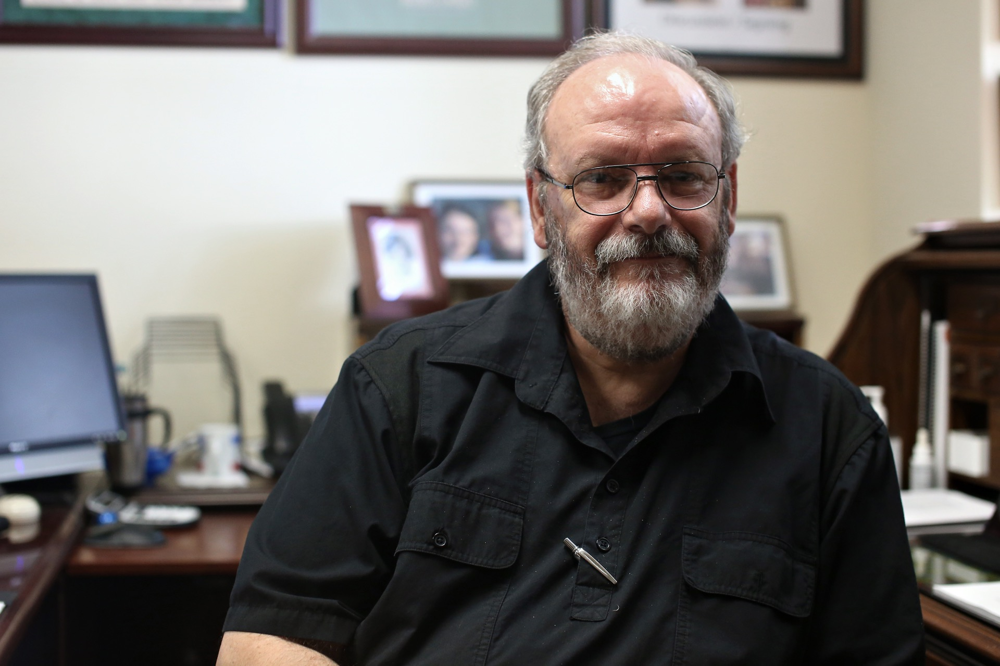

Gary Lavergne is the author of the true crime novel “A Sniper in the Tower” and the director of admissions research for the University.
Gary Lavergne was 10 years old in August 1966, but he remembers watching the news reports of the Tower shooting from his home in Church Point, Louisiana with his father.
As they watched, his father, the town’s police chief at the time, stood up and told him the attack would likely be the first of many, an inspiration for killers to come. Sure enough, he was right.
The event inspired Lavergne to write his first true crime novel, “A Sniper in the Tower,” published in 1996 — the 30th anniversary of the shooting. Today, he works in the building where it all happened as UT’s director of admissions research.
The Daily Texan sat down with Lavergne to talk about the shooting’s impact and the importance of learning from the past.
The Daily Texan: You’ve said you don’t think Charles Whitman’s actions were caused by a brain tumor. Do you think it was a separate mental health issue or something else entirely?
Gary Lavergne: Was he depressed? Yeah. Did he have anxiety? Yeah. But that’s common all over this campus. Did it prevent him from knowing the difference between right and wrong and being able to control himself? The answer is certainly not. I’ve been working here for 16 years, and I routinely come across students who have dealt with far greater challenges than Charles Whitman ever had. His parents were going through a separation — well that’s terrible, it really is. But what percentage of our students are witnessing the same things at home?
He had academic problems, money problems, his marriage was falling apart. He just saw himself as someone who should have been accomplishing a whole lot more. I think he wanted to die but in a big way and a very selfish way. He feels he’s lost control of his life, so he takes control, doing the thing he does better than just about everybody. He ended up taking the ultimate control, because he decided who lives and who dies.
DT: What’s the main difference between the way the shooting was treated then and how similar events are treated now?
GL: None of this came with instructions. The conventional wisdom at the time apparently was ‘go back to work.’ Today, we know a lot more about the cycle of grief and how to get over it. For example, when Haruka [Weiser] was killed, the University had a very different reaction. That’s because we’ve, tragically, become wise about how to handle these things because they’ve happened so much more often.
DT: Whitman did see a psychiatrist, who he told about his thoughts to shoot people from the top of the Tower. Why didn’t that immediately raise a red flag?
GL: At the time, we just didn’t have a whole lot of experience with all of this. It’s easy for us to look back at that psychiatrist and say he should’ve committed Whitman, but then Whitman could’ve lined up a number of character witnesses — including his mother and his wife — to say “No, he’s a good guy.” The psychiatrist really did the only thing he could’ve, which was ask him to come back. In a case like that, the patient makes the decision, and Whitman decided not to come back.
DT: How does understanding the events of Aug. 1, 1966 benefit us today?
GL: History is the source of wisdom. It comes from looking back and learning from your experiences and the experiences of other people. I think what this demonstrated for law enforcement was that, for a town the size of Austin at that time, they were not prepared to handle something like this. So what did they do? They created SWAT teams. Now you have people who are trained in active-shooter situations, and that all started with this.
This interview has been edited for length and clarity.